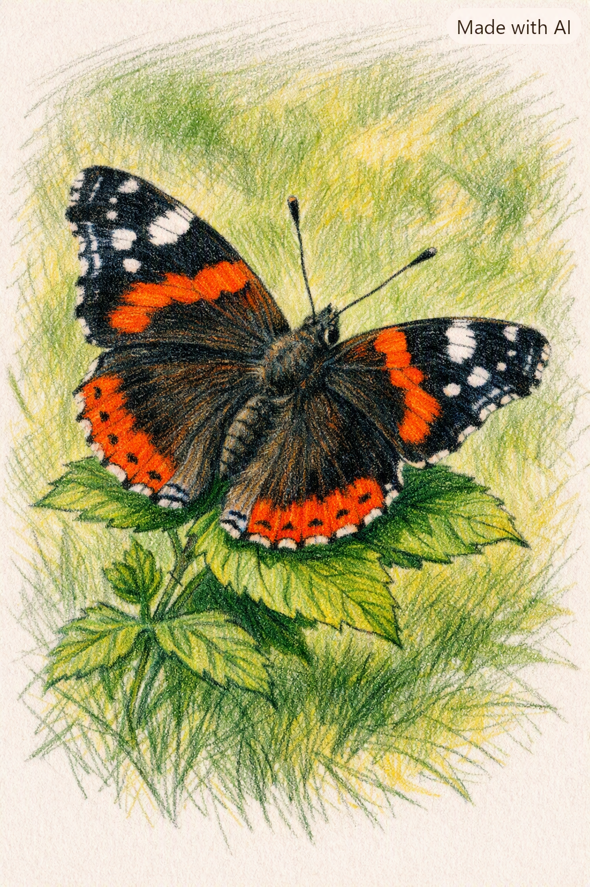

A nappali lepkék a természet legbájoltabb, legszínpompásabb rovarai közé tartoznak, melyek a meleg, napsütéses órákban népesítik be a virágos réteket és kerteket. Ők a lepkék világának legismertebb képviselői. A napfény melege éleszti fel őket. Repülésük nemcsak lenyűgöző látvány, hanem létfontosságú ökológiai feladat is, hiszen a nektár után kutatva számtalan növényfajt poroznak be nap mint nap. Anatomiailag könnyen megkülönböztethetők éjszakai rokonaiktól: csápjuk vége jellegzetesen bunkós, pihenés közben pedig a szárnyaikat függőlegesen, a hátuk felett zárják össze. Sok fajuk képes hatalmas távolságokat vándorolni. Színpompás szárnyaik nemcsak a pártalálást segítik, hanem a ragadozók megtévesztésére vagy elriasztására is szolgálnak. A hernyók fejlődése rendkívül izgalmas folyamat. Ez a csodás átalakulás a bábban történik. Megjelenésük a tavasz csalhatatlan hírnöke, jelenlétük pedig a tiszta és egészséges környezet egyik legjobb mutatója.
AI által generált tartalom!
A fecskefarkú lepke a leglátványosabb magyarországi nagylepke. Ez a faj rendkívül elegáns megjelenésű. [1] Nevét a hátsó szárnyain található, finom nyúlványokról kapta, amelyek a fecskék villás farkára emlékeztetnek. Szárnyainak alapszíne kénsárga, amelyet feltűnő fekete mintázat és a szegélyeken húzódó kék foltsor díszít. A hátsó szárnyak belső szegletében egy-egy riasztó hatású, téglavörös szemfolt is helyet kapott. Főként nyílt réteken, domboldalakon és kertekben találkozhatunk vele, ahol előszeretettel mutat be látványos násztáncot. A hímek gyakran a dombtetőkön gyülekeznek. [2] Évente két vagy három nemzedéke repül. [3] A csodás hernyó zöld alapszínű rovar. [4] Veszély esetén a hernyó a feje mögül egy villás, narancssárga illatszervet ölt ki, amely kellemetlen szagot áraszt a ragadozók elriasztására. Tápnövényei elsősorban a zellerfélék, mint például a vadmurok, a kapor vagy az édeskömény. Ez a békés állat bábként telel. [5] Magyarországon ez egy szigorúan védett faj. [6] Természetvédelmi értéke jelenleg 10 000 forint.
A nappali pávaszem az egyik leggyakoribb hazai lepke, amely nevét a szárnyain látható lenyűgöző mintázatról kapta. Mind a négy szárnyának felső oldalát egy-egy nagyméretű, kék, fekete és sárga színekben pompázó „szem” díszíti. Ez a mintázat létfontosságú védelmi mechanizmus: ha a lepkét támadás éri, hirtelen szétnyitja a szárnyait. A nagy szempárok megriasztják a ragadozókat. [1] Ezzel szemben a szárnyak fonákja teljesen sötétbarna és szürkésfekete. A zárt szárnyak tökéletes álcát nyújtanak. [2] Kiválóan alkalmazkodott az emberi környezethez, így parkokban, kertekben és erdőszéleken egyaránt sűrűn előfordul. A kifejlett lepkék nagyon szeretik a virágok nektárját, különösen a nyáriorgonát. Ez a faj kifejlett lepkeszerűen telel. [3] A hideg elől sötét padlásokra húzódik. [4] Kora tavasszal a legelső rovarok között jelenik meg, amint a napfény kicsit felmelegíti a levegőt. A fekete hernyók csalán leveleit eszik. [5] Jelenlétük a biokertészetekben kifejezetten hasznos rovar. [6]
AI által generált tartalom!
A káposztalepke a fehérlepkék családjának egyik legismertebb és legelterjedtebb képviselője egész Európában. Szárnyai tiszta hófehérek, a felső szárnyak csúcsán pedig egy-egy jellegzetes, félhold alakú fekete folt látható. A nőstényeken több fekete pötty van. [1] Ez a rovar nagyon gyorsan repül. [2] A nyílt mezőgazdasági területek, konyhakertek és virágos rétek állandó lakója. Évente általában két-három nemzedéke fejlődik ki, így tavasztól egészen a késő őszi fagyokig találkozhatunk vele. A kifejlett lepkék teljesen ártalmatlan lények. [3] Pödörnyelvükkel kizárólag a virágok édes nektárját szívogatják a mezőn. A falánk hernyó komoly kártevőnek számít. [4] Képesek teljesen lekopasztani a veteményesekben a fejes káposztát, a karfiolt vagy a brokkolit. Védekezésül a hernyók mustárolajokat halmoznak fel a testükben a tápnövényükből. Emiatt a madarak nem eszik meg. [5] A faj bábként vészeli át telet. [6]

Az admirálislepke az egyik legszebb és legdinamikusabb vándorlepkénk a Kárpát-medencében. Szárnyainak alapszíne mély, bársonyos fekete, amelyet az első szárnyakon egy-egy élénk narancsvörös szalag szel át. A hátsó szárnyak szegélyét szintén egy széles, vöröses sáv díszíti, fekete pontok sorozatával. Ez a kontrasztos mintázat rendkívül katonás. [1] Az admirálislepke kiváló és kitartó repülő. [2] Hatalmas távolságokat képes megtenni; ősszel a nálunk kelt nemzedék tagjai a melegebb dél felé vándorolnak. Tavasszal a déli területekről északra húzódó példányok népesítik be újra a tájat. A kifejlett lepke szereti az erjedt gyümölcsöket. [3] A magányos hernyó csalán leveleit fogyasztja. [4] Magának kis lakóöblöt, úgynevezett hernyófészket sző a növényen. A globális felmelegedés sokat változtat életükön. [5] Emiatt egyre több példány kísérli meg a sikeres áttelelést nálunk is a fagymentes zugokban. Szinte bármilyen hazai élőhelyen gyorsan felbukkanhat. [6]
AI által generált tartalom!
A citromlepke a magyar természetben az egyik legkorábban ébredő és leghosszabb életű nappali lepke. A hímek szárnyai ragyogó citromsárga színűek. [1] A nőstényeké sokkal visszafogottabb, halvány zöldesfehér árnyalatú. Mindegyik szárny közepén egy apró, narancssárga pont látható. Szárnyainak alakja különleges, levélszerűen csúcsosodó, és a rajta futó erezet is a növényi levelek felépítését utánozza. A lepke zárt szárnyakkal teljesen láthatatlan. [2] A kifejlett egyedek elképesztő módon akár 10-12 hónapig is elélhetnek. A nyári hőséget és a téli hideget egyaránt nyugalmi állapotban töltik a szabad ég alatt. Testükben különleges fagyálló anyag termelődik télen. [3] A fagyok ellen a glicerin védi. [4] Tavasszal nagyon korán szárnyra kelnek már. [5] A hernyók kizárólag kutyabenge leveleket esznek. [6] Finoman szőrözött, zöld testükkel jól elrejtőznek a bokrok ágain.